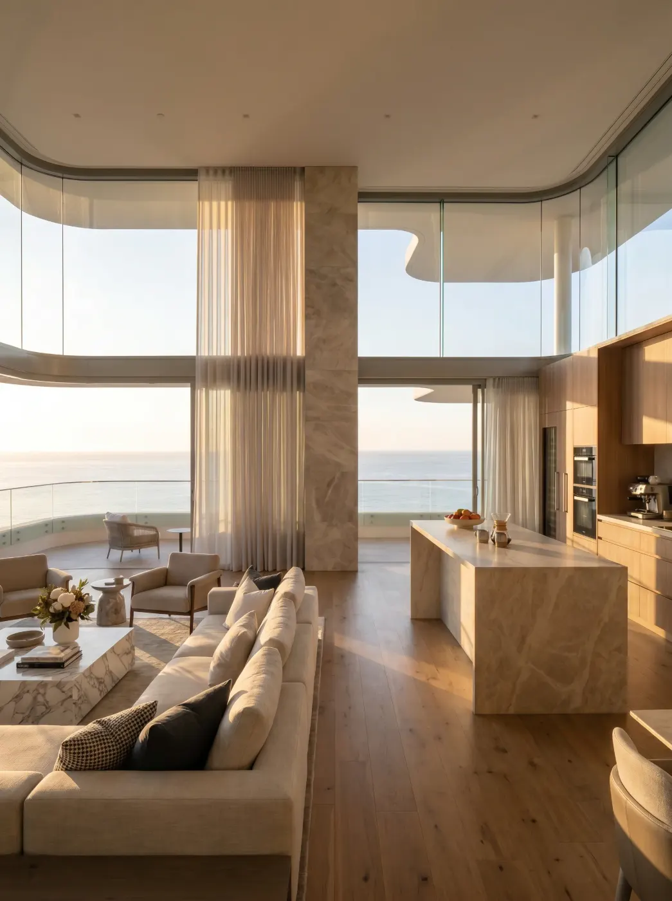
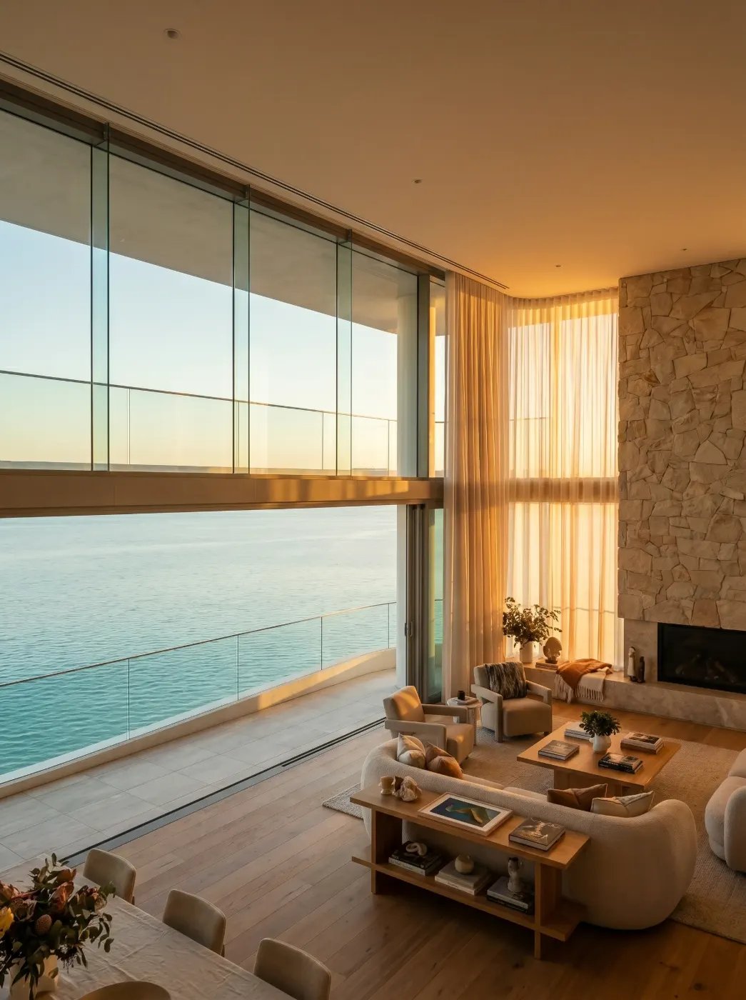

Real Estate & Architecture
It has to be sold long before it exists.
Scroll ↓Sales launch years before topping out. Imagery decides whether a development is desirable while the site is still a hole in the ground, and it has to survive comparison with the finished building.
Digital
Renders
Exterior and interior visualisation built from your drawings.
Drawings and diagrams
Presentation drawings, plans and explanatory diagrams.
Cinematic film
Launch films cut for sales and for broadcast.
Website
Development and launch sites.
Interactive website
Configurators, unit finders and explorable plans.
Virtual
Digital twin
An accurate live model of the development.
Walkthrough
Real-time navigation of the space.
Immersive rooms
Sales-suite and screen environments.






A call, then a written scope: what is being made, in which column, and what it costs.
One piece taken to final so the standard is agreed before volume.
Production against the agreed cadence, delivered per channel.
Request pricing.
Scope, structure and a rate card for Real Estate & Architecture within two working days.